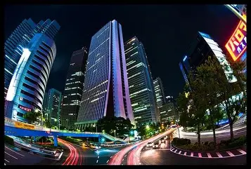
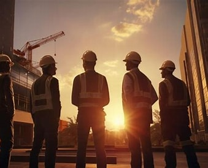

Historia del Día del Ingeniero
En Colombia se suele mencionar el 17 de agosto como el Día del Ingeniero.
Sin embargo, esta fecha no está reconocida oficialmente por el Congreso ni por decretos nacionales,
por lo que su validez es discutida.
Algunas versiones relacionan la fecha con la creación de asociaciones de ingenieros en el país,
pero no existe un documento jurídico que la respalde.
En otros países se conmemora en diferentes fechas:
- México: 1 de julio, en recuerdo de la primera ingeniería civil reconocida en 1776.
- Argentina: 6 de junio, en homenaje a la graduación del primer ingeniero civil del país en 1870.
- Perú: 8 de junio, por la fundación del Colegio de Ingenieros del Perú.
En conclusión, en Colombia el 17 de agosto es más una fecha simbólica y social que oficial.

¿Quiénes pueden considerarse ingenieros? - Ramas de la Ingeniería
Se consideran ingenieros los profesionales que, apoyados en la ciencia, las matemáticas y la tecnología,
diseñan y aplican soluciones para mejorar la vida de las personas y el desarrollo de la sociedad.
La ingeniería no es una sola, sino que está dividida en diferentes ramas, cada una especializada
en un campo del conocimiento y de la práctica profesional.
A continuación, algunas de las ramas más representativas:
-
Ingeniería Civil: encargada de la construcción de infraestructuras como carreteras,
puentes, presas, aeropuertos, sistemas de acueducto y alcantarillado, así como el diseño de ciudades.
-
Ingeniería Mecánica: se enfoca en el diseño, análisis, fabricación y mantenimiento de
máquinas y sistemas mecánicos, como motores, vehículos, turbinas e instalaciones industriales.
-
Ingeniería Eléctrica: estudia y desarrolla sistemas de generación, transmisión,
distribución y uso de la energía eléctrica.
-
Ingeniería Electrónica: se centra en circuitos, dispositivos electrónicos, telecomunicaciones,
automatización y sistemas de control.
-
Ingeniería de Sistemas o Software: abarca el diseño y desarrollo de programas, aplicaciones,
inteligencia artificial, bases de datos y sistemas informáticos para diferentes sectores.
-
Ingeniería Química: transforma materias primas en productos útiles como plásticos, combustibles,
alimentos procesados, cosméticos y fármacos.
-
Ingeniería Ambiental: busca soluciones sostenibles para reducir la contaminación,
aprovechar de manera responsable los recursos naturales y proteger el medio ambiente.
-
Ingeniería Industrial: optimiza procesos de producción y gestión en fábricas,
empresas de servicios y cadenas logísticas, con el fin de mejorar la eficiencia y la productividad.
-
Otras ramas especializadas: ingeniería biomédica, aeroespacial, agroindustrial, petrolera,
naval, de materiales, entre muchas otras que responden a las necesidades del siglo XXI.
un ingeniero puede especializarse en diferentes campos,
pero todos tienen en común la capacidad de analizar problemas y crear soluciones
prácticas que transforman la sociedad.
Principales aportes de la Ingeniería al desarrollo de la sociedad
La ingeniería ha sido, a lo largo de la historia, una de las fuerzas más importantes en el progreso
de la humanidad. Gracias a ella, se han diseñado y construido soluciones que han transformado
la manera en que vivimos, trabajamos, nos transportamos y nos comunicamos.
Entre los principales aportes de la ingeniería al desarrollo de la sociedad se destacan:
-
Infraestructura y transporte: construcción de carreteras, puentes, aeropuertos,
sistemas de metro y trenes de alta velocidad que han facilitado la movilidad de personas y mercancías.
-
Energía: desarrollo de plantas hidroeléctricas, termoeléctricas, nucleares y, más recientemente,
fuentes de energía renovable como la solar y la eólica, que han permitido abastecer a la población mundial.
-
Comunicación y tecnología: la invención del telégrafo, el teléfono, la radio, la televisión
e internet han cambiado para siempre la manera en que la humanidad se conecta e intercambia información.
-
Salud y biotecnología: creación de equipos médicos (tomógrafos, resonadores, prótesis),
vacunas, medicamentos y tecnologías de diagnóstico que han aumentado la esperanza y calidad de vida.
-
Producción y automatización: la revolución industrial y el uso de maquinaria en fábricas
transformaron los sistemas de producción, generando bienes en masa y mejorando la economía global.
Hoy, la robótica y la inteligencia artificial continúan optimizando los procesos industriales.
-
Medio ambiente: diseño de plantas de tratamiento de agua, sistemas de reciclaje, tecnologías
de energía limpia y estrategias de construcción sostenible que buscan reducir el impacto ambiental.
-
Exploración espacial: el desarrollo de cohetes, satélites y estaciones espaciales
ha permitido expandir el conocimiento más allá de la Tierra y aplicar estas tecnologías
a la vida cotidiana (GPS, telecomunicaciones, pronóstico del clima).
la ingeniería está presente en casi todos los aspectos de la vida moderna:
desde la manera en que nos movemos y comunicamos, hasta la forma en que cuidamos nuestra salud
y protegemos el medio ambiente. Sin los avances de la ingeniería, la sociedad no habría alcanzado
el nivel de desarrollo actual.

Ingenieros destacados en la historia de Colombia y del mundo
A lo largo de la historia, muchos ingenieros han dejado huella con sus descubrimientos,
invenciones y proyectos. Sus aportes no solo transformaron la ciencia y la tecnología,
sino también la vida cotidiana de millones de personas.
En Colombia:
-
Francisco José de Caldas (1768-1816): pionero en los estudios de geografía,
astronomía y cartografía en la Nueva Granada. Aunque no tuvo un título formal como ingeniero,
aplicó conocimientos técnicos en obras de infraestructura y ciencia aplicada.
-
Julio Garavito Armero (1865-1920): ingeniero civil, astrónomo y matemático colombiano.
Realizó estudios sobre óptica y mecánica celeste. Su rostro aparece en el billete de 20.000 pesos colombianos.
-
Manuel Elkin Patarroyo (1946-): médico e investigador colombiano, creador de la primera
vacuna sintética contra la malaria. Aunque no es ingeniero, su trabajo refleja cómo la ciencia
y la ingeniería se complementan para beneficio de la humanidad.
En el mundo:
-
Nikola Tesla (1856-1943): inventor e ingeniero eléctrico, pionero en el desarrollo
de la corriente alterna (CA), radio, rayos X y múltiples inventos que sentaron las bases
de la electricidad moderna.
-
Gustave Eiffel (1832-1923): ingeniero civil francés, famoso por diseñar la
Torre Eiffel en París y numerosos puentes metálicos en Europa y América.
-
Leonardo Torres Quevedo (1852-1936): ingeniero español, creador de autómatas,
dirigibles y aportes en los primeros computadores electromecánicos.
-
Hedy Lamarr (1914-2000): actriz e inventora austriaca que desarrolló junto a George Antheil
un sistema de salto de frecuencias, base de la tecnología actual de WiFi y Bluetooth.
Estos personajes demuestran que la ingeniería no se limita a una sola rama,
sino que es un campo diverso donde las ideas, la creatividad y la innovación
pueden cambiar al mundo entero.

Retos actuales de la Ingeniería en el siglo XXI
La ingeniería del siglo XXI enfrenta desafíos sin precedentes, derivados del crecimiento
poblacional, el cambio climático, la globalización y el avance acelerado de la tecnología.
Estos retos no solo exigen innovación, sino también un compromiso ético y sostenible
con la sociedad y el planeta.
-
Cambio climático y sostenibilidad: desarrollar infraestructuras resilientes,
energías limpias y tecnologías que reduzcan la huella de carbono, además de diseñar
soluciones para enfrentar fenómenos naturales cada vez más intensos.
-
Energía renovable: garantizar un suministro energético seguro y sostenible
mediante fuentes como la solar, eólica, hidráulica, geotérmica e incluso la fusión nuclear.
-
Inteligencia Artificial y automatización: integrar la robótica, el aprendizaje automático
y los sistemas autónomos en la industria, transporte, medicina y servicios, sin reemplazar
de manera masiva la mano de obra humana.
-
Ciberseguridad: proteger la información y los sistemas digitales de ataques
cibernéticos, considerando que cada vez más procesos sociales y económicos dependen de internet.
-
Infraestructura inteligente: crear “ciudades inteligentes” que utilicen sensores,
redes de datos y sistemas interconectados para mejorar la movilidad, el consumo energético
y la seguridad ciudadana.
-
Acceso equitativo a la tecnología: reducir la brecha digital entre países desarrollados
y en desarrollo, garantizando que la innovación llegue a todas las comunidades, sin exclusiones.
-
Exploración espacial y nuevas fronteras: diseñar tecnologías para viajar, habitar
y aprovechar los recursos fuera de la Tierra, como la Luna o Marte, garantizando seguridad
y sostenibilidad en el espacio.
En conclusión, la ingeniería del siglo XXI no se trata solo de crear avances tecnológicos,
sino de hacerlo de manera responsable, sostenible y equitativa, buscando siempre el bienestar
de la humanidad y la preservación del planeta.

Frases célebres o reflexiones sobre la Ingeniería
La ingeniería no solo se basa en cálculos y estructuras, también es una disciplina
que inspira creatividad, innovación y visión de futuro. A lo largo de la historia,
distintos pensadores, científicos e ingenieros han dejado frases que reflejan
la importancia de esta profesión en el desarrollo humano.
“Los científicos estudian lo que ya existe; los ingenieros crean lo que nunca fue.” – Albert Einstein
“La ingeniería es el arte de dirigir las grandes fuentes de poder de la naturaleza
para el uso y conveniencia del hombre.” – Thomas Tredgold
“La ciencia puede divertirnos y fascinarnos, pero es la ingeniería la que cambia el mundo.” – Isaac Asimov
“Un buen ingeniero piensa en la eficiencia, pero un gran ingeniero piensa en la humanidad.” – Anónimo
“La ingeniería es la profesión que convierte los sueños en realidades.” – Herbert Hoover
Estas frases muestran que la ingeniería va más allá de los números:
es una forma de transformar la creatividad en soluciones prácticas
que impactan positivamente a la sociedad.
